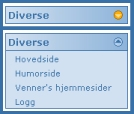

Dette har etterhvert blitt et ganske avansert eksempel. Her har vi to objekter som utfører en handling
til andre objekter. Det hele går ut på å forandre et bilde når muspekeren holdes over et bestemt objekt,
og å skjule/vise deler av en tabell når man klikker på noe. Bildene som brukes blir lastet ned på forhånd
til nettleseren, for at de skal kunne vises straks når en handling skjer.